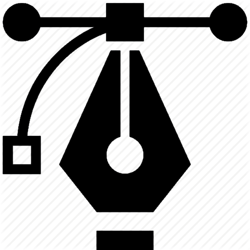

Mijn portfolio
Mijn naam is Francisco Ngo en ik ben 17 jaar. Ik ben geboren in Nederland en ik kom uit Alkmaar. In de middelbare school CSG Jan Arentsz heb ik een havo diploma gehaald met de profielen NG & NT. Op dit moment ben ik bezig met mijn opleiding informatica op het Hogeschool Rotterdam. De reden voor de keuze voor deze studie is omdat ik het coderen zelf leuk vind.
Mijn persoonlijke kenmerken/kwaliteiten zijn:
- Geduldigheid
- Creatief
- Vertrouwbaar
- loyaal en trouw
- Behulpzaam
- Zelfstandig
Verder is mijn interessegebied exact & informatica.
Ik heb nog geen toekomstplan. Ik ben van plan om eerst een paar jaar aan mijn opleiding te werken, daarna ga ik pas een plan bedenken voor de toekomst.
Contactgegevens
- Geduldigheid
- Creatief
- Vertrouwbaar
- loyaal en trouw
- Behulpzaam
- Zelfstandig
Verder is mijn interessegebied exact & informatica.
Ik heb nog geen toekomstplan. Ik ben van plan om eerst een paar jaar aan mijn opleiding te werken, daarna ga ik pas een plan bedenken voor de toekomst.
Contactgegevens
Francisco
Ngo
Ngo
Geboortedatum
16-11-2000
Talen
Nederlands
Engels
Vaardigheden
HTML
CSS
PHP
MySQL
Scrum
Opleidingen
HBO, Informatica
2018 - ....
Hogeschool Rotterdam
Werkervaring
Geen
Hobbies
|  | |
|---|---|
| Gaming | Graphic Design |